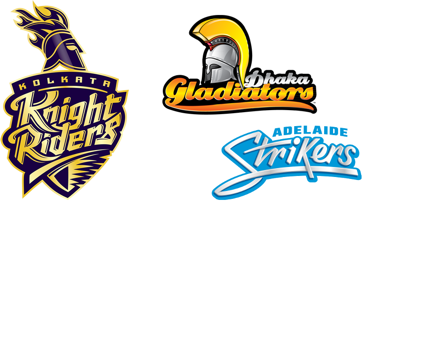

The official website of
Shakib Al Hasan
A talented left-hand batsman and left-arm spinner, Shakib Al Hasan is unarguably the best cricketer that Bangladesh have ever had. As a bowler, he is accurate, consistent, and canny; and his aggression and a wide range of strokes are the keys to his batting. Even more importantly, he has self-belief an excellent temperament, unflustered by the big occasion and ready to do battle against the top teams.
Meet world's no.1 all rounder
Shakib Al Hasan has been named world's best all rounder in several times in ODI's by the ICC, first by any Bangladeshi. He has been holding possession of this honor for the last few years.
Major Teams he played for
